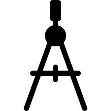
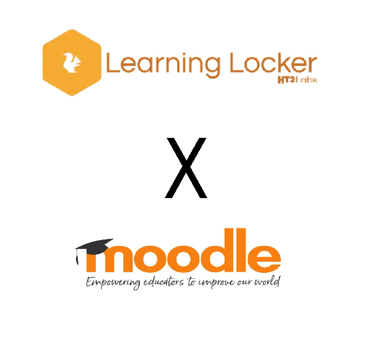

muda3のポートフォリオへようこそ


（2018/04 - 2019/03）
初めての共同研究でした。
社会人としてのマナーやメールの送り方のご指導を賜りました。
研究作業については、LRS(Learning
Locker)、LMS(Moodle)の統合開発、テスト段階での性能評価を行いました。

（2019/04 - 2020/03）
２回目の共同研究では、論文を作成し学会で発表しました。
(論文は
こちらにアクセスしてください。) 初めての論文製作作業でしたので、かなり成長を実感しました。
この研究では、インターネット上で学ぶことの出来る学習コンテンツの
何をどういう順序で学ぶことが良いのかということについての考察です。
現在 IT スキルを持った人材に対する需要が高まりつつあります。
こういったスキルを学ぶことの出来るオンライン学習コンテンツは
増えつつありますが、教育機関で学ぶのと異なり体系的に学ぶということが
しにくいという問題があると考えています。
そこで情報処理学会で規定しているコンピュータサイエンス分野の
標準カリキュラムという知識体系を元に、オンライン学習コンテンツ間の
順序関係が把握することができないかという考察を行ないました。
（2019/11 - 2020/01）
初めての給料が発生する無期限のインターンシップでした。
主にアプリケーションの起動段階において、サブスクリプションに登録しているかどうかの
確認を行う所謂Auth認証システムの構築を行いました。
初めて扱うシステム、ソフトウェアが多かったので四苦八苦しました。
アプリの通知を流すだけでもここまで大変なのかと驚きの毎日でした。
諸事情により退職してしまいましたが、ここで学んだことは数多くあります。
こちらについてはNDAを結んでいるためお話することができません。